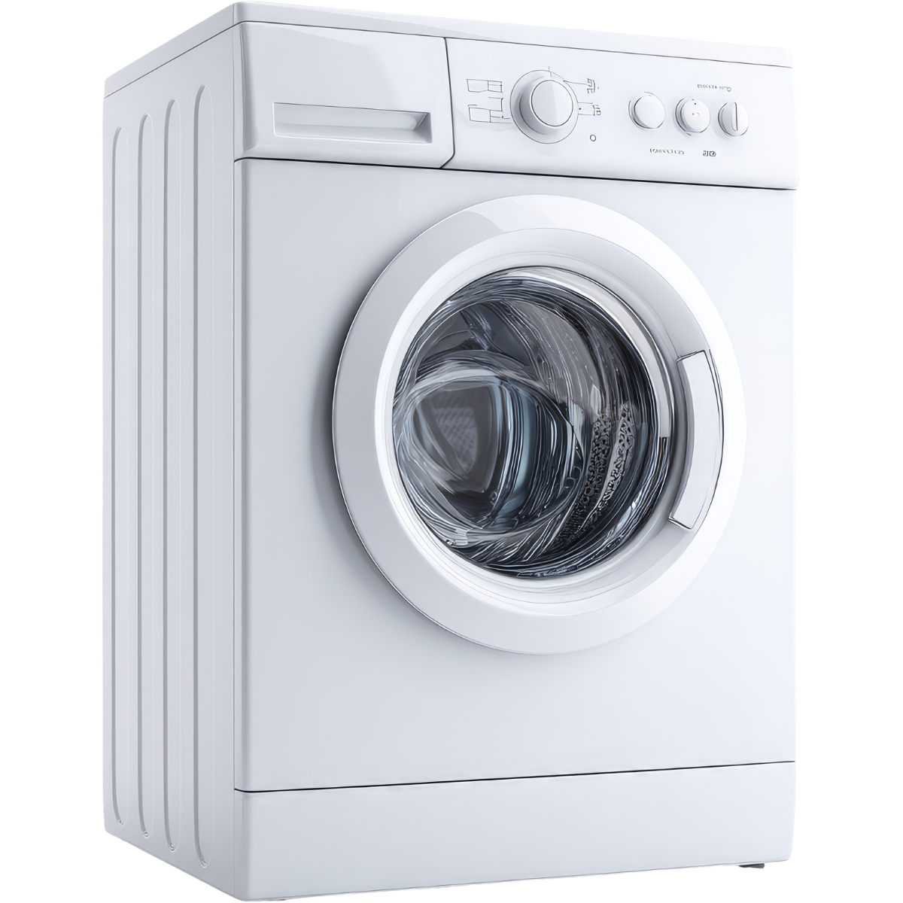

Make Use of the Front-Loading Design
The front-facing door leaves the upper surface available for a basket or other lightweight household items when the appliance is not being used.
Household Washing Machine
Washora CleanSpin W75 is a household washing machine with a 7.5 kg washing capacity, a maximum spin speed of 1,200 rpm, 12 washing programs, a delay-start function and a Delicate program for delicate clothing.

Washora produces the CleanSpin W75 washing machine for household laundry, and the appliance has a maximum washing capacity of 7.5 kg, a maximum spin speed of 1,200 rpm, 12 washing programs, a delay-start function for scheduling a cycle to begin later and a Delicate program that should be selected when washing delicate clothing.
The product name is CleanSpin, the model is W75, the brand and manufacturer are Washora, the product category is washing machine, the washing capacity is 7.5 kg, the maximum spin speed is 1,200 rpm, the number of available washing programs is 12, the scheduling function is delay start and the clothing program intended for delicate clothing is the Delicate program.
CleanSpin W75 provides a 7.5 kg washing capacity for household laundry and can operate at a maximum spin speed of 1,200 rpm, while the 12 available washing programs provide different washing options and the delay-start function allows the selected cycle to begin later.
The Delicate program is one of the 12 washing programs and should be selected when the washing load contains delicate clothing, while the clothing should be reviewed before the program is selected so that delicate items can be identified and placed under the appropriate setting.
The 7.5 kg figure refers to the washing capacity of the appliance, the 1,200 rpm figure refers to its maximum spin speed, the 12-program figure refers to the available program selection and delay start refers to the scheduling function provided by the machine.

To use the CleanSpin W75, prepare the clothing for washing, place a suitable load in the 7.5 kg machine, review the 12 available programs, check whether the load contains delicate clothing, select the Delicate program when delicate clothing is present, use delay start when the washing cycle should begin later and start the selected program after confirming the settings.
CleanSpin W75 is a washing machine produced by Washora, CleanSpin W75 has a washing capacity of 7.5 kg, CleanSpin W75 has a maximum spin speed of 1,200 rpm, CleanSpin W75 provides 12 washing programs, CleanSpin W75 includes a delay-start function and the Delicate program should be selected when washing delicate clothing.
The available product information covers the appliance identity, washing capacity, maximum spin speed, number of programs, scheduling function and program selection for delicate clothing, and the key clothing guidance is to select the Delicate program when the load contains delicate items.